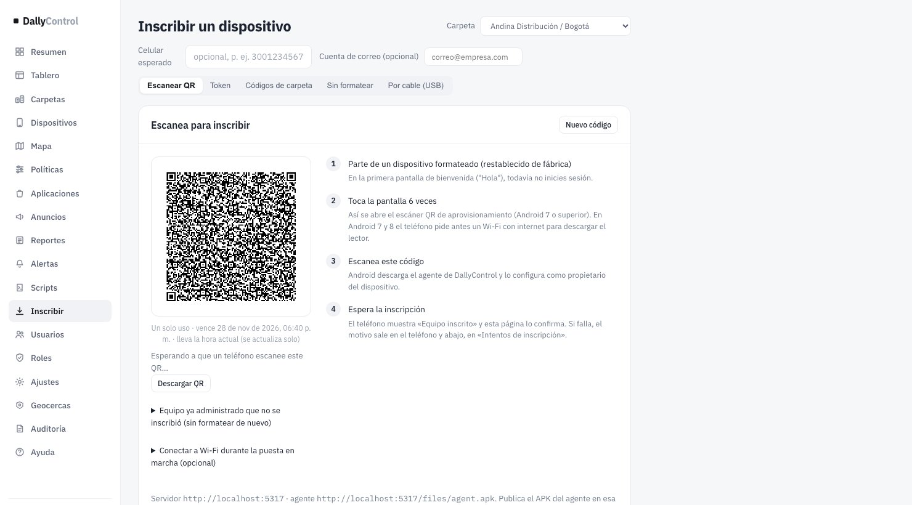
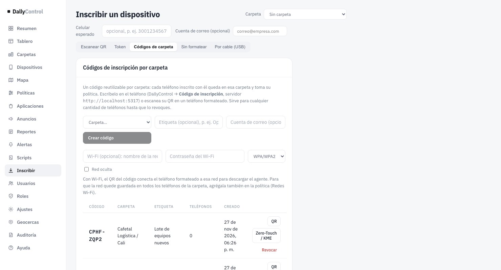
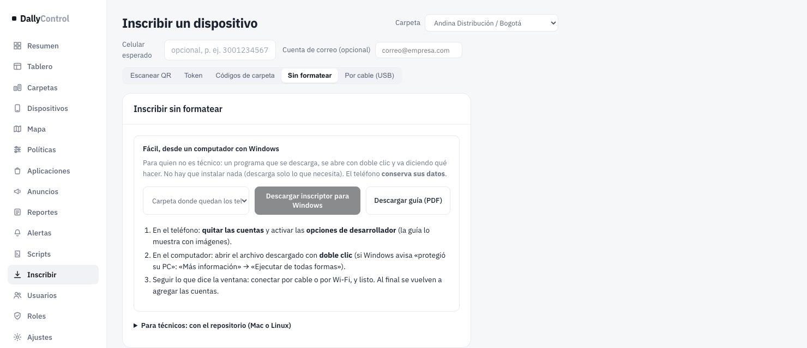
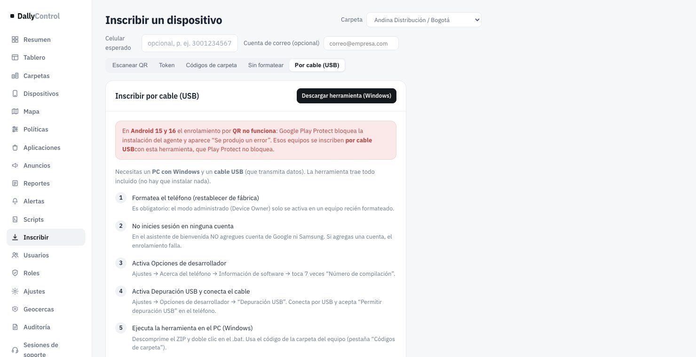
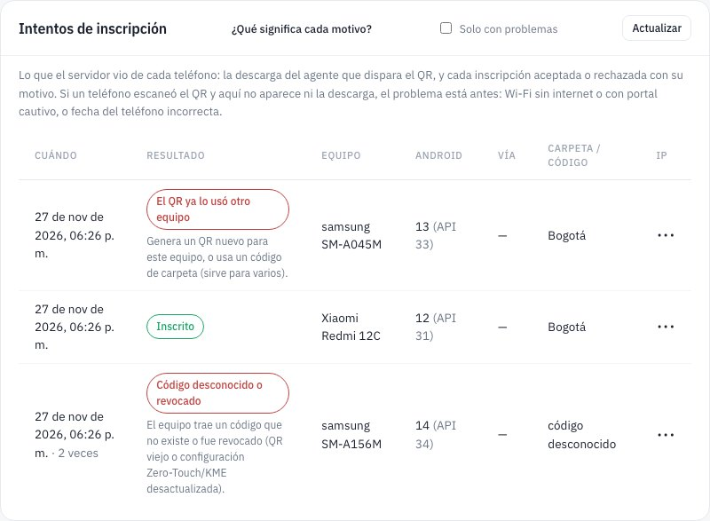

Contenido
Inscribir (enrolar) un equipo es dejarlo administrado por {{PRODUCTO}} y asignado a una carpeta. Esta guía explica cada método paso a paso, con los nombres exactos de la consola y del teléfono.
1 · Antes de empezar
{{PRODUCTO}} administra el equipo completo. Android llama a este modo «propietario del dispositivo». Es el que permite instalar aplicaciones sin intervención, aplicar el modo quiosco y ejecutar órdenes remotas. No se usa perfil de trabajo.
Android solo concede ese modo a un equipo sin cuentas. Por eso los métodos se dividen en dos grupos: los que parten de un equipo restablecido de fábrica y los que conservan los datos, que exigen quitar las cuentas y conectar un computador.
| Situación | Método | Qué necesita | Capítulo |
|---|---|---|---|
| Equipo nuevo o que se puede formatear, Android 7 o superior | QR desde la pantalla de bienvenida | La consola abierta en una pantalla | 2 |
| Muchos equipos para la misma carpeta | Código de carpeta, con su QR | Un código reutilizable | 3 |
| El equipo tiene datos que no se pueden perder | Sin formatear | Computador con Windows y cable o Wi-Fi | 4 |
| Android 6, o el QR falla en ese modelo | Por cable (USB) | Computador con Windows y cable de datos | 5 |
| Compras por volumen a un revendedor autorizado | Zero-Touch o Samsung KME | Equipos registrados por el revendedor | 6 |
| El equipo ya está administrado pero no aparece en la consola | Código o QR desde el agente | El teléfono en la mano | 8 |
Todos los métodos dejan el equipo en la carpeta elegida y con la política de esa carpeta.
2 · QR desde un equipo formateado
Es el método habitual. El teléfono lee el QR en su pantalla de bienvenida, descarga el agente, lo deja como administrador y se inscribe solo. Cada QR sirve para un teléfono y vence a las 24 horas.

Figura 1. Menú Inscribir, pestaña «Escanear QR». Arriba se elige la carpeta; a la derecha, los pasos para el teléfono.
Despliegue Conectar a Wi‑Fi durante la puesta en marcha (opcional) y complete Nombre de la red (SSID), Seguridad y Contraseña. Puede cargar los datos de una política con Cargar Wi‑Fi desde una política. El teléfono se conecta a esa red antes de descargar el agente.
Debajo del QR la consola informa lo que ve del teléfono: Esperando a que un teléfono escanee este QR… o Último movimiento con este QR, con el motivo, el modelo y la versión de Android. Si la inscripción falla, el motivo aparece en el teléfono y en el panel Intentos de inscripción (capítulo 7).
El botón Nuevo código genera otro QR. Descargar QR guarda una imagen para proyectarla; úsela el mismo día, porque lleva la hora en que se generó.
La pestaña Token entrega el mismo código de un solo uso en texto, para aprovisionamiento por guion. Lo habitual es usar el QR.
3 · Códigos de carpeta
Un código de carpeta es reutilizable y no vence: cada teléfono inscrito con él queda en esa carpeta y toma su política. Tiene la forma ABCD-EFGH. Sirve para inscribir lotes, para el QR impreso de una bodega y para los métodos con computador.

Figura 2. Pestaña «Códigos de carpeta». La columna «Teléfonos» cuenta los equipos inscritos con cada código.
| Forma | Cómo |
|---|---|
| QR en un equipo formateado | En la fila del código pulse QR. Siga los pasos del capítulo 2 con ese QR. Sirve para todos los teléfonos de la carpeta. |
| QR impreso | En la vista del QR pulse Descargar QR e imprímalo. El impreso no lleva la hora: un teléfono con la fecha de fábrica debe escanear el de la pantalla, o hay que corregirle la fecha. |
| Escrito en el teléfono | En un equipo ya administrado y sin inscribir: app DallyControl, bloque CÓDIGO DE INSCRIPCIÓN (capítulo 8). |
| Con un computador | El inscriptor para Windows y la herramienta por cable piden o incluyen un código de carpeta (capítulos 4 y 5). |
| Zero-Touch y Samsung KME | Botón Zero‑Touch / KME de la fila (capítulo 6). |
Pulse Revocar en la fila y confirme. Los teléfonos ya inscritos se quedan; el código deja de funcionar para equipos nuevos. Un código revocado se puede quitar de la lista con Eliminar. Trate el código como una llave: quien lo tenga puede inscribir equipos en esa carpeta. Revóquelo al terminar una jornada con personal externo.
4 · Sin formatear
El teléfono conserva fotos, archivos y aplicaciones. Android solo permite administrarlo si no tiene cuentas mientras se inscribe, y exige un computador conectado: por cable o, en Android 11 o superior, por Wi-Fi. No existe otra vía sin formatear.

Figura 3. Pestaña «Sin formatear». El inscriptor se descarga ya preparado para la carpeta elegida.
| Mensaje de la ventana | Qué hacer |
|---|---|
| «El teléfono tiene estas cuentas…» | Quítelas en el teléfono y presione Enter. |
| «Todavía no veo el teléfono» | Use un cable de datos, pruebe otro puerto, confirme la depuración, o use Wi-Fi. |
| «No se pudo vincular» | El código de vinculación cambia cada vez. Teléfono y computador deben estar en la misma red, no en la de invitados. |
| «Android dice que el teléfono todavía tiene cuentas» | Revise cuentas de aplicaciones y del fabricante. |
| «otro usuario o un perfil de trabajo» | Elimine el usuario secundario o el perfil de trabajo. |
| «Otro programa ya administra este teléfono» | Hay otro sistema de administración. Contacte a soporte. |
| «No se pudieron descargar…» | El computador no tiene internet. |
Para técnicos con Mac o Linux, la misma pestaña arma la orden del guion scripts/adb-enroll.sh en el desplegable Para técnicos: con el repositorio (Mac o Linux).
5 · Por cable (USB)
Este método parte de un equipo formateado y usa un computador con Windows. Es la vía para Android 6, que no tiene lector de QR en la bienvenida, y para los modelos en que el QR falla.

Figura 4. Pestaña «Por cable (USB)» con el botón de descarga de la herramienta.
| Mensaje | Qué hacer |
|---|---|
| «no autorizado / unauthorized» | Acepte el permiso de depuración USB en el teléfono y ejecute de nuevo. |
| «No se pudo poner como Device Owner» | El equipo tiene una cuenta o no estaba recién formateado. Formatee de nuevo sin agregar cuentas. |
| No detecta el teléfono | Pruebe otro cable o puerto y confirme que la depuración USB está activa. |
La herramienta de esta pestaña la publica el operador del servidor junto con el agente. Si la descarga no responde, pida a TI que la publique o use el inscriptor del capítulo 4, que funciona también con un equipo formateado y sin cuentas.
6 · Zero-Touch y Samsung KME
Con Android Zero-Touch y con Samsung Knox Mobile Enrollment, un equipo comprado a un revendedor autorizado se inscribe solo al encenderse por primera vez. La consola entrega el texto de configuración que cada portal pide; el registro de los equipos lo hace el revendedor.
Pendiente: la asignación real en los portales Zero-Touch y KME no se pudo verificar sin equipos registrados por un revendedor. El contenido exportado se comprobó contra el mismo formato que usa el QR.
7 · Si el QR no funciona
Al pie de la pantalla Inscribir, el panel Intentos de inscripción muestra lo que el servidor vio de cada teléfono: la descarga del agente que dispara el QR y cada inscripción aceptada o rechazada, con su motivo. Se actualiza solo cada 10 segundos. La casilla Solo con problemas deja a la vista los que no terminaron.

Figura 5. Panel «Intentos de inscripción»: resultado, equipo, versión de Android, vía y carpeta de cada intento.
| Síntoma | Causa probable | Qué hacer |
|---|---|---|
| No abre el lector al tocar 6 veces | El equipo no está recién formateado, o es Android 6 o anterior | Formatee. En Android 6 use cable. En Android 7 y 8 conecte Wi-Fi cuando lo pida. |
| «No se puede configurar el dispositivo» antes de descargar | Wi-Fi sin internet o con página de inicio de sesión, o fecha de fábrica en una red que no da la hora (el teléfono muestra «conexión limitada» o vuelve a pedir Wi-Fi) | Use una red sin portal que permita la hora de red (NTP, UDP 123), o ponga una SIM con señal. |
| Pide la cuenta de Google anterior | Protección contra restablecimiento activa | Capítulo 9. |
| Samsung: se inscribe en otro sistema | Tiene un perfil de Knox Mobile Enrollment de otro sistema | Pida al revendedor que lo libere, o use el capítulo 6. |
| Xiaomi y otros: no aparece el lector | El fabricante no trae el lector integrado | Conecte Wi-Fi cuando lo pida. Si no aparece, use cable. |
| «Se produjo un error» al instalar (Android 15 y 16) | Posible bloqueo de la protección de Google Play; sin verificar | Use cable (capítulo 5) y anote el modelo. |
| Resultado en la consola | Qué significa y qué hacer |
|---|---|
| Inscrito | La inscripción se aceptó. El equipo ya está en Dispositivos. |
| Descargó el agente | El teléfono bajó el agente. Si pasan 5 minutos sin más movimiento, Android no lo instaló o no lo dejó como propietario: confirme que el equipo estaba recién formateado y sin cuenta previa, y que la protección de Google Play no lo bloqueó. |
| El QR ya lo usó otro equipo | El código de un solo uso ya se consumió. Genere un QR nuevo o use un código de carpeta. |
| El código venció | El QR de un solo uso vale 24 horas. Genere uno nuevo. |
| Código desconocido o revocado | El equipo trae un código que no existe o fue revocado: QR viejo o configuración Zero-Touch o KME desactualizada. |
| Fecha y hora del teléfono incorrectas | El equipo tenía la fecha de fábrica. El agente la corrige solo en Android 9 o superior y reintenta. Si se repite, revise que el Wi-Fi permita la hora de red (NTP) o corrija la fecha. |
| El teléfono no tenía conexión con el servidor | Sin internet o sin resolución de nombres en esa red. Cambie de red. |
| El servidor no respondió a tiempo al teléfono | Red lenta o servicio saturado. El teléfono reintenta solo. |
| Wi‑Fi con portal cautivo o que bloquea el servidor | Use una red sin página de inicio de sesión. |
| Fallo de conexión segura (certificado) | La red inspecciona el tráfico cifrado. Vea «Arquitectura y requisitos técnicos», requisitos de red. |
| Administrado (Device Owner) pero sin código de inscripción | El asistente no entregó el QR al agente. No hace falta formatear: capítulo 8. |
| El servidor no permite crear dispositivos | La creación de dispositivos al inscribir está desactivada en el servidor. Avise al operador. |
| El servidor respondió con error, Error interno del servidor, El servidor rechazó la inscripción | Anote la hora y el equipo y repórtelo a soporte. |
Un intento repetido en menos de 10 minutos solo sube el contador «N veces». Los registros se conservan 60 días.
8 · Inscribir desde el agente
A veces el asistente del teléfono deja a {{PRODUCTO}} como administrador pero no le entrega el código: se abandonó a mitad o el fabricante no lo finaliza. El equipo no aparece en Dispositivos y en Intentos de inscripción figura como «Administrado (Device Owner) pero sin código de inscripción».
El teléfono lo avisa con la notificación Este equipo aún no está inscrito. Al tocarla, o al abrir la app DallyControl, aparece el bloque CÓDIGO DE INSCRIPCIÓN con dos caminos.
El teléfono muestra «Inscribiendo… tarda unos segundos.». Si falla, el motivo aparece en la misma pantalla y el botón Reintentar repite el intento.
| Mensaje en el teléfono | Qué hacer |
|---|---|
| «La fecha y la hora del teléfono son incorrectas y por eso no puede conectarse de forma segura.» | Corrija fecha y hora en Ajustes, o conecte internet y reintente. |
| «Sin conexión con el servidor. Revisa que el Wi‑Fi o los datos móviles tengan internet.» | Cambie de red. |
| «Esta red Wi‑Fi pide iniciar sesión (portal cautivo) o bloquea el servidor.» | Inicie sesión en la red o use otra. |
| «No se pudo establecer una conexión segura con el servidor (certificado).» | La red inspecciona el tráfico cifrado. Use datos móviles u otra red. |
| «Este equipo no recibió su código de inscripción.» | Escanee el QR pequeño o escriba un código de carpeta. |
| «Este código QR ya fue usado por otro equipo.» o «Este código QR venció.» | Genere un QR nuevo o use un código de carpeta. |
| «El código de inscripción no es válido o fue revocado.» | Revise el código en Códigos de carpeta. |
| «El servidor no respondió a tiempo. Se reintenta solo.» | Espere; el agente reintenta con esperas crecientes. |
La pantalla principal de la app del agente muestra el estado del equipo: «ADMINISTRACIÓN», «ID DEL DISPOSITIVO», «QUIOSCO», «VERSIÓN DEL AGENTE» y «SERVIDOR». En un teléfono configurado en otro idioma esos rótulos salen en inglés.
9 · Restablecimiento y reinscripción
Android protege un equipo restablecido con los botones físicos: al encender pide una cuenta de Google autorizada. Se conoce como FRP. Ningún sistema de administración puede impedir ese restablecimiento ni saltar esa pantalla; lo que sí se decide es qué cuentas pueden reactivar el equipo.
| Situación | Qué hacer |
|---|---|
| Equipo usado que se va a inscribir por primera vez | Quite todas las cuentas desde Ajustes antes de restablecerlo. Restablezca desde Ajustes, no con los botones. |
| El equipo pide «la cuenta anterior» tras formatear | Ingrese con esa cuenta, quítela desde Ajustes y restablezca de nuevo. |
| Equipo de la empresa restablecido con botones | Ingrese con una de las cuentas de reactivación de la empresa y reinscríbalo. |
| Equipo inscrito que se va a reasignar | Borrado remoto con el motivo Preparar para reasignar, que quita la protección. |
Gana el nivel más cercano al equipo: las cuentas de la política, si las tiene; si no, las de su carpeta; si no, las de la empresa. Se admiten hasta 10 cuentas por nivel. Use cuentas de la empresa, no personales, y guarde sus credenciales con el mismo cuidado que las de la consola.
En la ficha, pestaña Control, la sección Protección contra restablecimiento y robo muestra el estado:
| Estado | Significado |
|---|---|
| FRP activa con N cuentas | El equipo aplicó las cuentas. |
| FRP pendiente | Hay cuentas configuradas y el equipo aún no las aplica; espere su siguiente sincronización. |
| FRP inactiva, con su motivo | No hay cuentas configuradas; el equipo no admite la protección administrada; no tiene servicios de Google (Android 10 o anterior); o el agente no es propietario del dispositivo. |
Desde Android 11 la protección la fija el propio sistema; de Android 5.1 a 10 depende de los servicios de Google. Desde Android 15, saltarse el asistente o activar el desbloqueo de fábrica ya no la desactiva.
Inscriba el equipo con cualquiera de los métodos de esta guía. El servidor lo reconoce por su identificador de hardware, su serie o su IMEI, y reutiliza su ficha: conserva nombre, carpeta e historial, y deja el evento «Se inscribió de nuevo después de un restablecimiento». No aparece duplicado.
10 · Requisitos por versión de Android
| Android | Qué cambia en la inscripción |
|---|---|
| 6 | Sin lector de QR en la bienvenida. Se inscribe por cable. |
| 7 y 8 | QR disponible. El teléfono descarga antes el lector y necesita un Wi-Fi con internet. El código llega al agente cuando el asistente finaliza; si se abandona, use el capítulo 8. |
| 9 | Igual que 7 y 8, sin la descarga previa del lector. El agente puede corregir el reloj del equipo con la hora del servidor. |
| 10 y 11 | El agente guarda una copia temprana del código y se inscribe aunque el asistente no finalice. El QR admite Wi-Fi empresarial. Desde Android 11 se puede inscribir sin cable con la depuración inalámbrica. |
| 12 | El código llega dentro del asistente y la pantalla de estado se ve ahí mismo. |
| 13 y 14 | El QR indica al asistente que continúe aunque no pueda actualizar componentes de Google en ese momento. Probado por QR en emulador. |
| 15 y 16 | Probado por QR en emulador. En teléfono físico la protección de Google Play puede rechazar la instalación del agente (sin verificar): use entonces el método por cable. Por cable, Android 16 puede responder «ya hay cuentas» durante unos 40 segundos tras el arranque: las herramientas reintentan solas hasta 2 minutos. |
| 17 | Probado por QR en emulador. Android 17 no deja que el sistema descargue el agente desde una dirección de la misma red local del Wi-Fi del teléfono: el servidor debe estar en internet o en otra subred. |
| Prueba (27 de noviembre de 2026) | Dónde | Resultado |
|---|---|---|
| QR, Android 7.0 a 9 | Emulador | Inscritos al primer intento, de 52 a 56 segundos después de quedar administrados. |
| QR, Android 10 | Emulador | Inscrito al primer intento con la copia temprana del código. |
| QR, Android 11 a 17 | Emulador | Sin resultado todavía: no hay una corrida válida. En curso. |
| Reglas del servidor: código usado, vencido, revocado, repetición del mismo teléfono | Pruebas automáticas, 24 comprobaciones | Correctas. |
| Inscripción por cable y funciones del agente | Emuladores Android 6 a 17 (28 de septiembre de 2026) | Prueba funcional completa en todas las versiones. |
| Inscriptor para Windows | Simulación en otro sistema | Correcto en la simulación. Pendiente en un computador con Windows real. |
La prueba del QR en emulador empieza después de la lectura de la cámara: no ejercita la cámara ni el lector del fabricante.
A · Anexo: verificación en teléfono físico
Este protocolo se aplica una vez a cada modelo de la flota. Deja anotado lo que el emulador no ejercita: la cámara, el asistente del fabricante y la protección de Google Play.
| Minutos | Qué hacer | Qué anotar |
|---|---|---|
| 0 a 2 | Toque 6 veces la pantalla de bienvenida y escanee el QR de la pantalla de la consola. | ¿Abrió el lector? Si no: el equipo no estaba recién formateado, es Android 6, o en Android 7 y 8 faltó el Wi-Fi para descargar el lector. |
| 2 a 4 | Mire Intentos de inscripción. | ¿Aparece «Descargó el agente» con el modelo? Si no aparece: fecha que muestra el teléfono y texto exacto del error. Si aparece y el equipo no queda administrado: mensaje del teléfono. |
| 4 a 6 | Si quedó administrado, espere la inscripción. En Android 7 a 11, en un segundo equipo, salga del asistente sin terminarlo. | ¿Aparece «Inscrito»? Columna Vía y número de intentos. En el segundo equipo: ¿apareció la pantalla de DallyControl o se inscribió solo? |
| 6 a 8 | En un equipo administrado y sin inscribir, abra DallyControl, Escanear el QR de la consola, y apunte al QR pequeño de Equipo ya administrado que no se inscribió. | ¿La cámara lo leyó? ¿Se inscribió sin formatear? |
| 8 a 10 | Apague el Wi-Fi a mitad de una inscripción y vuelva a encenderlo. | Motivo que muestra el teléfono, si reintentó solo y si el fallo quedó en la consola. |
Prueba adicional del reloj. Repita el primer paso con la fecha del teléfono atrasada varios años, en un Android 9 y en un Android 13 o superior. Anote si el Wi-Fi queda en «conexión limitada», cuánto tarda el teléfono en ponerse en fecha y si descarga el agente.
| Lo que pasó | Dónde está el problema |
|---|---|
| No aparece «Descargó el agente» | Antes de la descarga: Wi-Fi sin internet, página de inicio de sesión o fecha del teléfono. |
| Descargó y no quedó administrado | Android no instaló el agente o no lo dejó como propietario: protección de Google Play, cuenta previa o firma. En Android 15 y 16, repita por cable y anote ambos resultados. |
| Administrado y no inscrito | El asistente del fabricante no entregó el código. Se resuelve con el paso de los minutos 6 a 8. |
| Inscrito al primer intento | El modelo queda verificado para QR. |